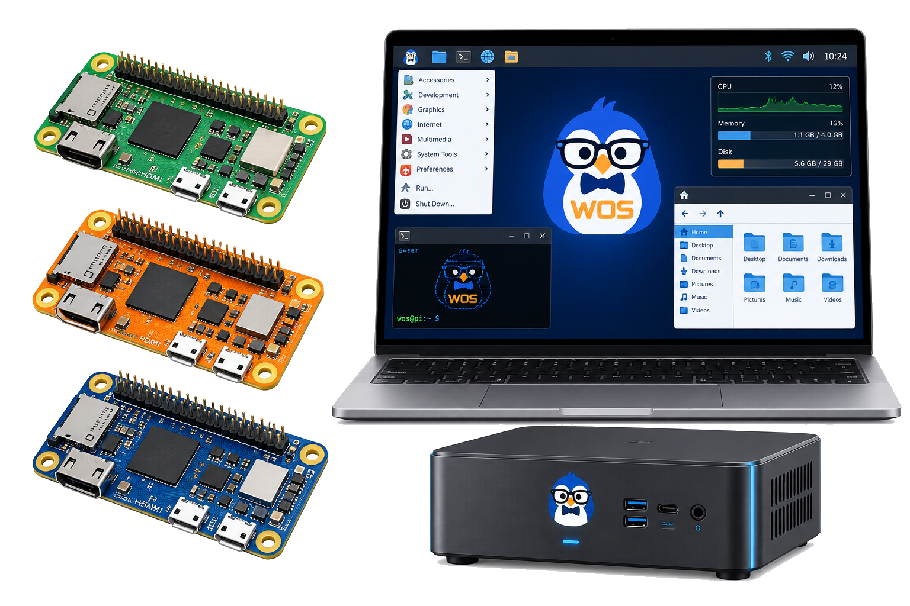

Encrypted mesh
Zero Trust mesh, device discovery, secure routing, and no open ports by default.
Pi hub and device mesh
Walker OS should begin as a Raspberry Pi hub, then monitor desktops, laptops, servers, storage, phones, tablets, IoT, Bluetooth devices, and future wearables through secure connections.

Supported targets
Network layer
The diagrams center on Tailscale and LAN access for a reason: Walker should reach machines securely, keep plain-text passwords out of the path, and require confirmations for destructive actions.
Zero Trust mesh, device discovery, secure routing, and no open ports by default.
Remote commands should use keys, logs, per-device permissions, and explicit approval for risky work.
Find local servers, storage, Bluetooth, IoT, and dashboard endpoints when the user allows it.
Track device names, roles, capabilities, last seen status, OS, IP, and trusted access methods.
Cloud and services
File storage, documents, photos, backups, contacts, notes, sharing, version history, and access from anywhere.
Google Drive, OneDrive, Dropbox, AWS, DigitalOcean, or other API-backed storage when the user chooses.
Uptime, SSL and security checks, response time, website change detection, resource usage, alerts, and logs.
First boot sequence
The first boot should tell the user what is happening, keep the system stable, and avoid hidden setup steps that make a Pi feel dead when it is only waiting.
Other devices
Index files, monitor storage health, back up data, and summarize local documents.
Detect reachability, device presence, network activity, and suspicious changes.
Future mobile dashboard, notifications, approvals, and voice/text interaction.
Audio devices, sensors, smart devices, and small automation surfaces.